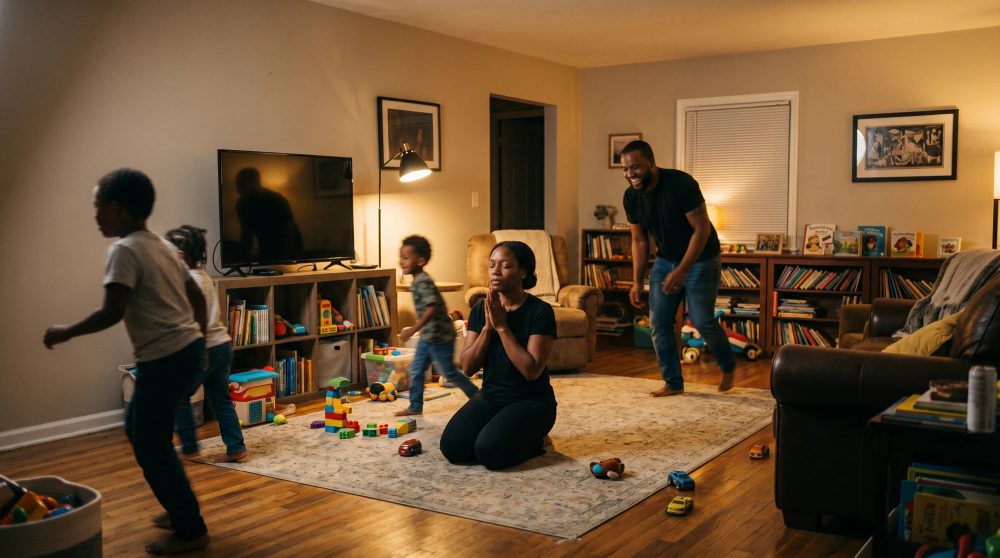

The Power of a Praying Mom
Case Study
The activation that hit a full-year lead goal built for three.
Power of a Praying Mom was an activation within Compassion USA's Unto Jesus campaign, a top-of-funnel, influencer-led effort to reach Christian moms across the US. The campaign was inspired by Matthew 25:40: every act of compassion toward others is an act of love Unto Jesus. As part of it, leadership asked me to create a digital Mother's Day giveaway to contribute toward our annual goal of 7,000 new leads across three activations. The proposed starting direction was to repurpose an existing five-day devotional on prayer. The next few pages walk through my process.
Challenge
To capture new leads on social media, the resource had to earn the attention on its own and move a mother deeply enough that she'd give her email to a brand she didn't yet know.
The complicating reality: the work had to start with no influencer signed, no clear brief, limited internal digital capacity, and a hard launch date already set.
Insight
The question I kept coming back to: would a busy mom hand over her email for one more devotional pointing her to another ideal she can't reach?
Through research, I found the answer underneath the question. US Christian mothers are spiritually hungry but emotionally exhausted. Another framework for perfection would land as one more thing she's failing at. What she needed was permission to be imperfect and a path back to Jesus. This insight became the foundation every creative decision was built on.
Concept
The research confirmed my instinct: a polished five-day devotional was the wrong answer for an audience already drowning in ideals. I developed the concept instead as Seven Honest Prayers for Seven Real Moments of Motherhood — closer to a modern-day lament than a devotional, built to sit with her in the hard moment, be honest about where she is and give room for God to speak to her.
The core idea: children don't need a perfect mom. They need a praying one.
Execution
I wanted the resource to be something a mother could return to in her moment of need, not a seven-day plan she'd fall behind on. So I framed it as moments: emotional truths she was already living, where she could be met with compassion. Every moment was built on a five-beat framework that dropped her into a snapshot of her life and moved her to the heart of the Unto Jesus campaign: right where she is, in the messy reality of loving her children, she is living Unto Jesus.

The Five-Beat Framework
-
01
Her Inner Voice
Each moment opens in her own interior voice, saying the thing she'd never say out loud. The research gave us her actual words; the design's job was to not soften them.
-
02
The Counterpoint
"You were never supposed to be." The counterpoint is discovered, not preached, one line that releases the lie without dismissing the ache underneath.
-
03
A Shared Lived Experience
The 8am scroll past a perfect mom's post while she's already behind. Specificity was the test for every scene: a wound she recognizes instantly, not a topic.
-
04
An Honest Prayer
A prayer modelled on the biblical laments, giving her permission to express the things she dares not, scripture woven in as the guide to truth rather than cited.
-
05
The Campaign Connection
Matthew 25:40 lands inside her own story, the love she pours out in obscurity is love given to Jesus himself. The campaign arrives as revelation, not branding.
Impact
The year's goal was 7,000 leads across three activations, roughly 2,300 each. The Power of a Praying Mom captured 6,948 leads on its own, close to the entire target from a single activation. It drove 10 million organic impressions across its influencer partners and a 52% engaged-session rate, the highest of any activation that year.
One Project. A Full Yearly Goal.
Let's Talk About What That Looks Like For You.
philippe.bautzer@gmail.com +1 (365) 998-8810 phylbautzer.myportfolio.com linkedin.com/in/phylbautzer